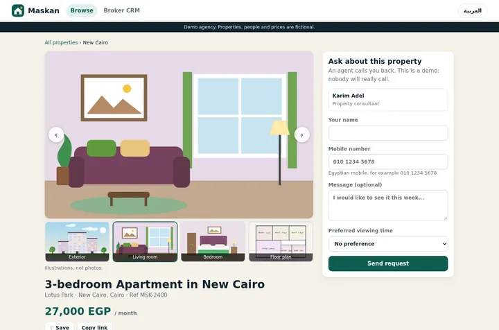
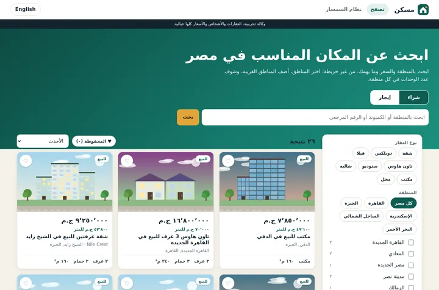
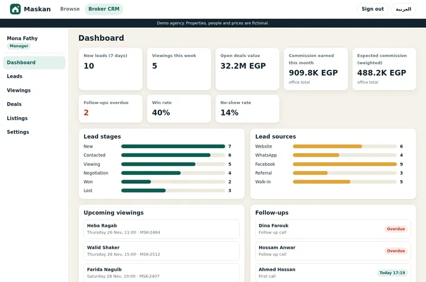
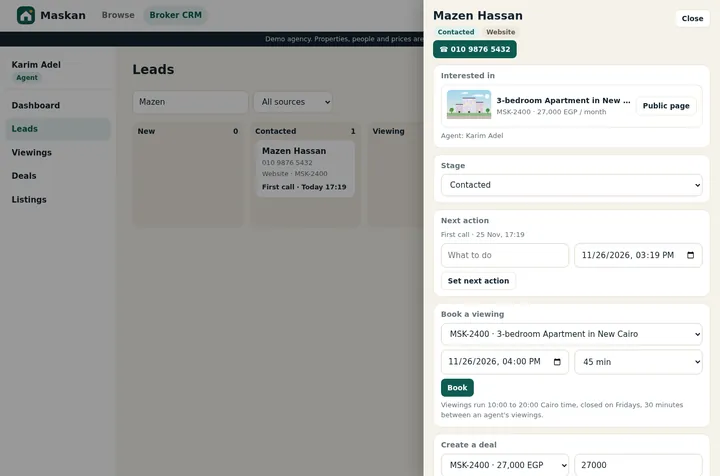
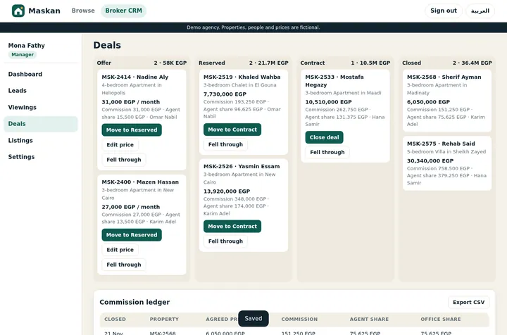
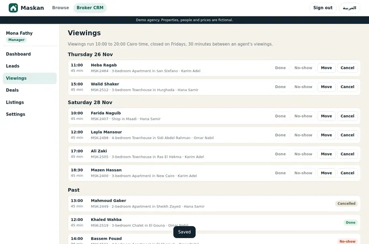
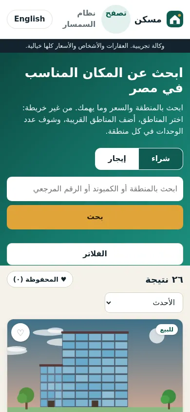

PORTFOLIO DEMO / BUILT / LIVE DEMO
Maskan
Find the place. Close the deal.
 ACTUAL BUILD
ACTUAL BUILDMaskan · Browse. Fictional demo data.
The problem
Small Egyptian agencies run on WhatsApp threads and spreadsheets: an inquiry arrives, nobody remembers who owns it, two brokers book the same Friday viewing, and the commission split is argued at the end of the month. Buyers, meanwhile, want to search by neighbourhood and budget, in Arabic, on a phone.
What was built
A public site with 38 listings for sale or rent. Search and filters work without a map: pick areas, add nearby areas, set price, bedrooms and size, and share the result as a link. Each property has a gallery, an installment estimate, similar properties and an inquiry form that also works offline. Behind it sits a broker CRM: a dashboard, leads with stages and suggested matching listings, a viewings schedule, a deals pipeline from offer to closed, a commission ledger with CSV export and listings management. Manager and agent roles see different data. Everything switches between English and Arabic right to left.
The approach
The rules live on the server and are tested as plain functions: commission (2.5% of a sale, one month of rent, 50% agent share), viewing hours (10:00 to 20:00 Cairo time, closed Fridays, 30 minutes between an agent's viewings), role permissions, and public-inquiry protection with a per-phone rate limit, a honeypot, an idempotency key and merging repeat inquiries into the open lead. A browser run with Puppeteer drives the real pages, including a hostile HTML string and an offline inquiry that is delivered exactly once.
The result
A live demo anyone can open. Browse as a buyer, then sign in to the CRM as manager Mona (PIN 2468) or an agent such as Karim (PIN 1357). 34 logic tests and about 32 browser checks pass, locally and against the live site.
Evidence & production limits
One shared demo workspace: last writer wins and it resets every 6 hours. The PINs are public on purpose and are not real authentication. Listings, people and prices are fictional, and the images are generated illustrations, not photos. The CRM is read-only offline. Times use a fixed Cairo offset (UTC+2) and the commission rules are demo defaults.
Built / demo. Not built: payments, listing-portal integration, WhatsApp or SMS sending, document storage, a map, multiple agencies. Direction, scope and delivery: Nada Gamal.
Next chapter
A real database with accounts and audit logs, WhatsApp Business follow-ups sent automatically, listing-portal import and a document vault for contracts would be the next implementation steps.
Inside the build
Open any preview to see the full capture. Captures show test or demonstration content. All records shown are demonstration content, not evidence of client use.






